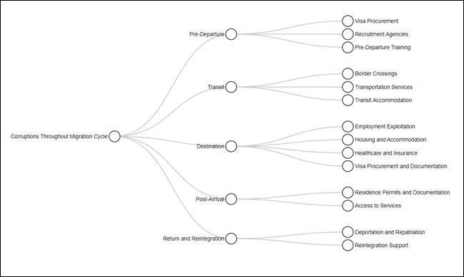
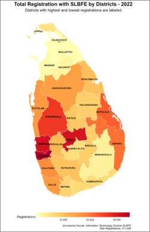

Nexus Between Corruption and Migration in Sri Lanka
An in-depth exploration of the complex relationship between corruption and migration patterns in Sri Lanka.
About the Research
This study investigates the intricate connections between corruption and migration in Sri Lanka, analyzing key factors that influence both phenomena and their impact on the nation's socio-economic landscape.
Key Figures

Key Phases of Migration and Corresponding Potential Corrupt Practices

Map of Sri Lanka Showcasing District-Wise SLBFE Registered Migrants in 2022


Contact
kmunugoda@gmail.com
+94 76 578 3838